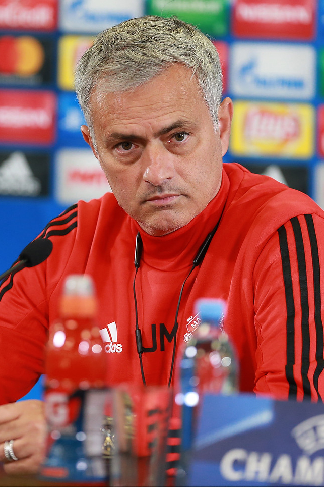

看台
成分局
MATCHDAY PAPER · 2026
不是问你支持谁，而是从你的反应里认出你
撕开你的
足球成分
领取测试票
→
←
01 / ?
比赛情绪
这题不了解 / 没感觉
题目会根据你的上一轮选择自动换路
检测完毕 · 你的看台席位已经锁定
你的足球成分
FAN ID / RESULT
NO. 0000
看台判词

Photo: Дмитрий Голубович ·
CC BY-SA 3.0
|||| ||| || |||| | ||| ||
复制结果
再测一次